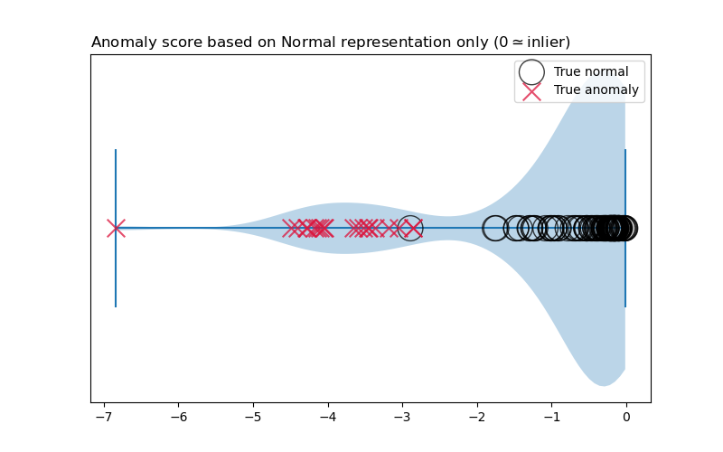

Note
Go to the end to download the full example code.
Demonstration of scoring samples by their normal representation score component#
import numpy as np
import matplotlib.pyplot as plt
from utils.dataset import generate_train_data, generate_test_data
from pan import ParallelAnomalousNudge
# Generate train / test data
X_train, y_train = generate_train_data(n_normal=100, n_abnormal=20, random_seed=42)
X_test, y_test = generate_train_data(n_normal=100, n_abnormal=20, random_seed=84)
# Fit PAN model on train data
from sklearn.preprocessing import StandardScaler
estimator = ParallelAnomalousNudge(scaler=StandardScaler(), nu=.05, omega=2.0, random_seed=42, verbose=False)
estimator.fit(X_train, y_train)
# Obtain nudge-free scores (anomaly scores with respect to the learned normal representation)
scores = estimator._score_component_normal(X_test)
plt.figure(figsize=(8, 5))
plt.title(r"Anomaly score based on Normal representation only ($0 \simeq \mathrm{inlier}$)", loc="left")
plt.violinplot(scores, positions=[1], vert=False)
plt.scatter(scores[y_test == 0], y=np.ones_like(scores[y_test == 0]), marker="o", edgecolor="k", color="none", s=400, alpha=.75, label="True normal", zorder=2)
plt.scatter(scores[y_test == 1], y=np.ones_like(scores[y_test == 1]), marker="x", color="crimson", s=200, alpha=.75, label="True anomaly", zorder=3)
plt.legend()
plt.yticks([])
plt.show()

Total running time of the script: (0 minutes 0.178 seconds)